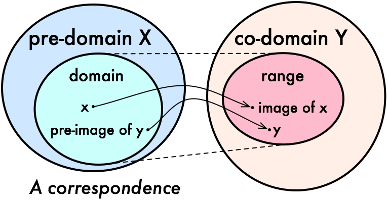

4. Sets and Functions
The vocabulary of sets, relations, and functions provides a uniform language for carrying out constructions in all the branches of mathematics. Since functions and relations can be defined in terms of sets, axiomatic set theory can be used as a foundation for mathematics.
Lean’s foundation is based instead on the primitive notion of a type,
and it includes ways of defining functions between types.
Every expression in Lean has a type:
there are natural numbers, real numbers, functions from reals to reals,
groups, vector spaces, and so on.
Some expressions are types,
which is to say,
their type is Type.
Lean and Mathlib provide ways of defining new types,
and ways of defining objects of those types.
Conceptually, you can think of a type as just a set of objects.
Requiring every object to have a type has some advantages.
For example, it makes it possible to overload notation like +,
and it sometimes makes input less verbose
because Lean can infer a lot of information from
an object’s type.
The type system also enables Lean to flag errors when you
apply a function to the wrong number of arguments,
or apply a function to arguments of the wrong type.
Lean’s library does define elementary set-theoretic notions. In contrast to set theory, in Lean a set is always a set of objects of some type, such as a set of natural numbers or a set of functions from real numbers to real numbers. The distinction between types and sets takes some getting used to, but this chapter will take you through the essentials.
4.1. Sets
4.1.1. Set Definitions and Operations
use rw or the simplifier to expand the definitions
simp is more “powerful” than rw: 1) simp can rewrite by searching over a special database of theorems annotated by @[simp]; 2) simp can perform simplifications inside a universal or existential quantifier.
simp only to tell the simplifier to use only the list of identities we give it, and not its full database of identities.
It will be useful to remember some basic key lemmas and their definitions:
subset_def : (s ⊆ t) = ∀ x ∈ s → x ∈ t
inter_def : s₁ ∩ s₂ = {a | a ∈ s₁ ∧ a ∈ s₂}
union_def : s₁ ∪ s₂ = {a : α | a ∈ s₁ ∨ a ∈ s₂}
mem_setOf (a range, existential) x ∈ Set.range f ↔ ∃ n, f n = x (i.e. exhibit a witness)
mem_setOf (predicate set) {p : α → Prop}: a ∈ {x | p x} ↔ p a
@[simp] mem_union : x ∈ a ∪ b ↔ x ∈ a ∨ x ∈ b
We also need to open the Set namespace to have access to the shorter names for the theorems.
variable {α : Type*}
variable (s t u : Set α)
open Set
example (h : s ⊆ t) : s ∩ u ⊆ t ∩ u := by
rw [subset_def, inter_def, inter_def]
rw [subset_def] at h
simp only [mem_setOf] -- simplify using only mem_setOf; otherwise simp will try to leverage all feasible lemmas
-- rw [mem_setOf]
rintro x ⟨xs, xu⟩
exact ⟨h _ xs, xu⟩ -- ⟨p, q⟩ is the constructor for conjunctions p ∧ q
example (h : s ⊆ t) : s ∩ u ⊆ t ∩ u := by
simp only [subset_def, mem_inter_iff] at *
rintro x ⟨xs, xu⟩
exact ⟨h _ xs, xu⟩
example (h : s ⊆ t) : s ∩ u ⊆ t ∩ u := by
intro x xsu -- *definitional reduction*: ``intro`` forces Lean to expand definitions of set operations.
exact ⟨h xsu.1, xsu.2⟩
example : s ∩ (t ∪ u) ⊆ s ∩ t ∪ s ∩ u := by
intro x hx
have xs : x ∈ s := hx.1
have xtu : x ∈ t ∪ u := hx.2
-- obtain ⟨xs, xtu⟩ := hx -- you can also unpack the conjunction ∧
-- have ⟨xs, xtu⟩ := hx -- you can also unpack the conjunction ∧
rcases xtu with xt | xu -- *definitional reduction*: ``rcases`` also forces Lean to expand definitions of set operations.
· left
-- show x ∈ s ∩ t
exact ⟨xs, xt⟩
· right
-- show x ∈ s ∩ u
exact ⟨xs, xu⟩
example : s ∩ (t ∪ u) ⊆ s ∩ t ∪ s ∩ u := by
rintro x ⟨xs, xt | xu⟩
· left; exact ⟨xs, xt⟩
· right; exact ⟨xs, xu⟩
4.1.2. Set Builder Notation { y | P y }
{ y | P y } : (fun y ↦ P y)
x ∈ { y | P y } : P x
def evens : Set ℕ :=
{ n | Even n }
def odds : Set ℕ :=
{ n | ¬Even n }
example : evens ∪ odds = univ := by -- Set.univ = {_a : α | True}
rw [evens, odds]
-- simp only [evens, odds]
ext n
-- we want to keep ``¬ Even n`` in our goal
simp [-Nat.not_even_iff_odd] -- tell simp to *not* use ``Nat.not_even_iff`` (to not rw Even into Odd)
apply Classical.em
Set-builder notation is used to define the following:
s ∩ t : {x | x ∈ s ∧ x ∈ t}
s ∪ t : {x | x ∈ s ∨ x ∈ t}
∅ : {x | False}
univ : {x | True}
4.1.3. Indexed Unions and Intersections
Sequence \(A_0, A_1, A_2, \ldots\) of sets of elements of
αis defined as a functionA : ℕ → Set α.There is nothing special about the natural numbers here, so
ℕcan be replaced by any typeIused to index the sets.
Union \(∪_{i=1}^n A_i\) is defined as
⋃ i, A i.Intersection \(∩_{i=1}^n A_i\) is defined as
⋂ i, A i
4.1.4. Proving Set Equality
We can use ext (extensionality) to prove that two sets are equal, by rewriting the set operation into element-wise (point-wise) operations.
example : s ∩ t = t ∩ s := by
ext x
simp only [mem_inter_iff]
-- rw [mem_inter_iff] -- also works
constructor
· rintro ⟨xs, xt⟩; exact ⟨xt, xs⟩
· rintro ⟨xt, xs⟩; exact ⟨xs, xt⟩
Alternativly, we can use Subset.antisymm to prove an equation s = t between sets by proving s ⊆ t and t ⊆ s.
example : s ∩ t = t ∩ s := by
apply Subset.antisymm
· rintro x ⟨xs, xt⟩; exact ⟨xt, xs⟩
· rintro x ⟨xt, xs⟩; exact ⟨xs, xt⟩
4.1.5. Set Difference \
Set difference is defined as s \ t (is typed as \\).
x ∈ s \ t : x ∈ s ∧ x ∉ t
It can be rewritten manually using Set.diff_eq and dsimp
or Set.mem_diff.
4.2. Functions
Suppose f : α → β is a function; s is a set of elements of type α; p is a set of elements of type β.
Elements in the “domain” (of type α) is called the preimage of the function output of type β.
Elements in the “range” (of type β) is called the image of the function input of type α.
4.2.1. Image and Preimage
{kind=link}
preimage f pis defined asf ⁻¹' p = {x | f x ∈ p}x ∈ f ⁻¹' pis further reduces tof x ∈ p
image f sis defined asf '' s = {y | ∃ x, x ∈ s ∧ f x = y}.y ∈ f '' sdecomposes to a triple⟨x, xs, xeq⟩withx : αsatisfying the hypothesesxs : x ∈ sandxeq : f x = y.
variable {α β : Type*}
variable (f : α → β)
variable (s t : Set α)
variable (u v : Set β)
open Function
open Set
#check preimage
#check image
#check range
example : f ⁻¹' (u ∩ v) = f ⁻¹' u ∩ f ⁻¹' v := by
ext
rfl
-- y ∈ f '' (s ∪ t) ↔ ∃ x, (x ∈ s ∨ x ∈ t) ∧ f x = y
example : f '' (s ∪ t) = f '' s ∪ f '' t := by
ext y; constructor
· rintro ⟨x, xs | xt, rfl⟩ -- decompose ``y ∈ f '' (s ∪ t)`` into ⟨x, xs|xt, rfl⟩
· left
use x, xs
right
use x, xt
· rintro (⟨x, xs, rfl⟩ | ⟨x, xt, rfl⟩) -- decompose ``y ∈ f '' s ∪ f '' t``
· use x, Or.inl xs -- left of ``s ∪ t``
use x, Or.inr xt -- right of ``s ∪ t``
Here is another example:
example : s ⊆ f ⁻¹' (f '' s) := by
-- image is defined using an existential quantifier
intro x xs
show f x ∈ f '' s
use x, xs
-- apply mem_image_of_mem f xs
{kind=link}
InjOn f s:fis injective ons.Injective f = InjOn f univ.
SurjOn f s:fis surjective ons.BijOn f s:fis bijective ons.
#check InjOn
#check SurjOn
#check BijOn
4.2.2. Inverse Function
Before we can define the inverse of a function f : α → β, we need to take special care of two cases:
1. When there is no x satisfying f x = y, we want to assign a default value in α.
Adding the annotation [Inhabited α] as a variable is to assuming that α has a preferred element, which is denoted default.
2. When there is more than one x such that f x = y, the inverse function needs to choose one of them.
One convenient way is to use the classical choose operator:
variable {α β : Type*} [Inhabited α]
#check (default : α)
variable (P : α → Prop) (h : ∃ x, P x)
#check Classical.choose h
example : P (Classical.choose h) :=
-- Given ``h : ∃ x, P x``, the value of ``Classical.choose h`` is some ``x`` satisfying ``P x``.
-- theorem ``Classical.choose_spec h`` says that ``Classical.choose h`` meets this specification.
Classical.choose_spec h
We can then define the inverse function as follows:
-- Nonconstructive logic like Classical.choose lacks computational content,
-- and its value returned isn't produced by a deterministic algorithm.
-- You must tell Lean not to compile this section into executable code or evaluate them with #eval.
noncomputable section
open Classical
def inverse (f : α → β) : β → α := fun y : β ↦
if h : ∃ x, f x = y then Classical.choose h else default